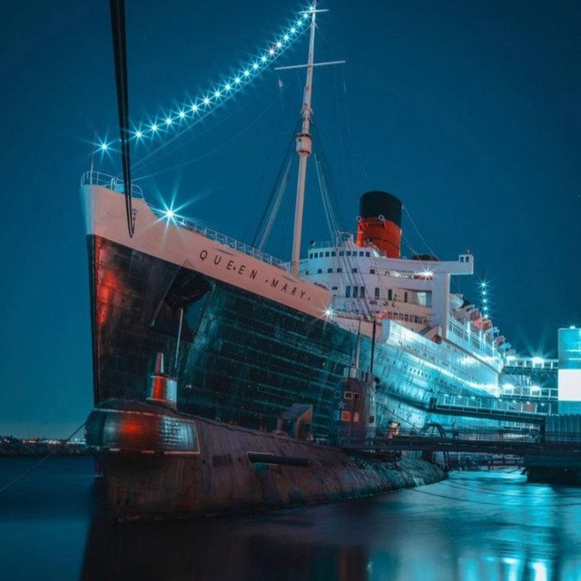
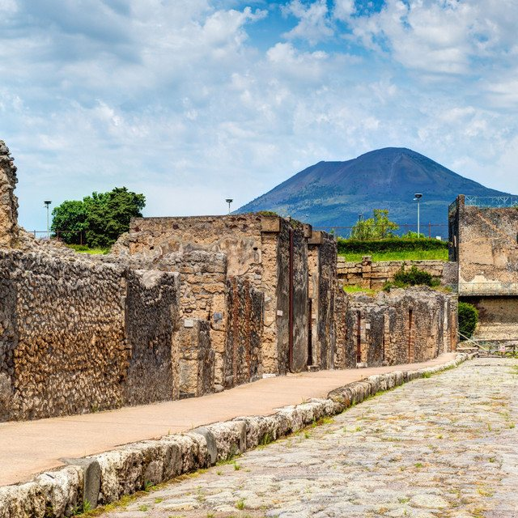
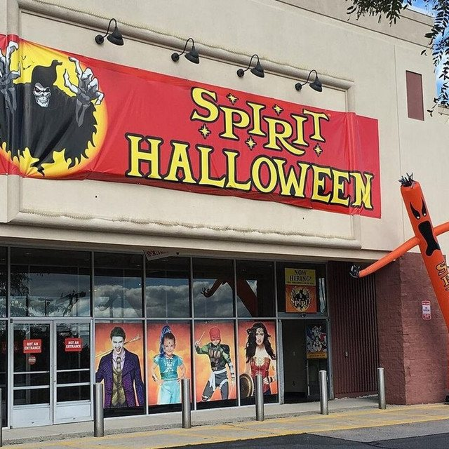
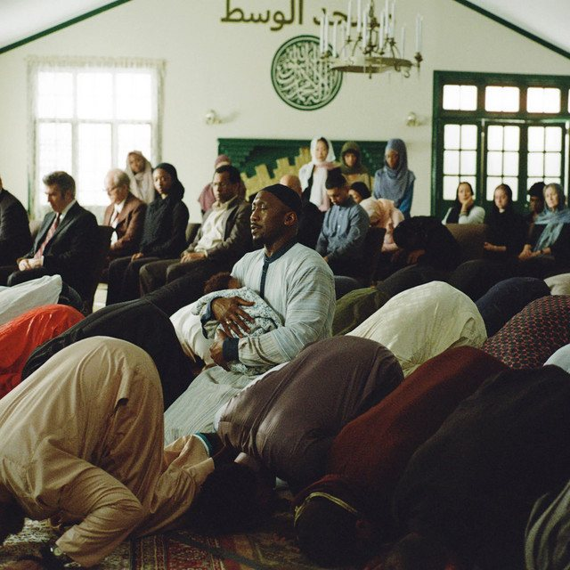

The Eclectic Polymath Podcast · Archive
#068 The Queen Mary: Imperial Luxury, Ghosts, and the Business of Haunted History

About this episode
The Queen Mary is more than a haunted ship docked in Long Beach. It is a floating archive of empire, war, celebrity, tragedy, tourism, and the strange way history gets repackaged when a landmark becomes too expensive to maintain and too iconic to abandon.
This episode looks at the ship’s evolution from British luxury ocean liner to wartime troopship, permanent Long Beach attraction, and one of America’s most famous haunted destinations. Along the way, it explores the real historical weight of the vessel: World War II service, onboard deaths, accidents, civic ambition, financial strain, and the constant challenge of preserving a massive aging ship.
Key points
- The Queen Mary is more than a haunted ship docked in Long Beach.
- This episode looks at the ship’s evolution from British luxury ocean liner to wartime troopship, permanent Long Beach attraction, and one of America’s most famous haunted destinations.
- Along the way, it explores the real historical weight of the vessel: World War II service, onboard deaths, accidents, civic ambition, financial strain, and the constant challenge of preserving a massive aging ship.
- This is a story about how the Queen Mary became a steel sarcophagus for the twentieth century — and how cities turn the past into both a burden and a business.
More like this

#209 Pompeii: The City That Didn't Know It Was EndingOctober 14, 202648:06
#197 Spirit Halloween: The Business of the Pop-UpOctober 8, 202648:16 #190 Church Hierarchy: From Apostles and Bishops to Pastors and PopesOctober 5, 20261:04:30
#190 Church Hierarchy: From Apostles and Bishops to Pastors and PopesOctober 5, 20261:04:30
#176 Islam: How Faith Organizes Everyday LifeSeptember 24, 20261:03:11